← Index · ← Previous · Next →
Authors: Patryk Michalski, Jerzy Paczos, Navdeep Arya, Magdalena Zych
Type: theory · Category: other · PDF: https://arxiv.org/pdf/2608.19333v1
Analysis basis: full PDF text, analyzed in chunks
Topic relevance: 🔥 analog quantum simulation 4/5 · Tavis-Cummings & cavity-many-emitter 2/5 · Keldysh / 2PI / non-Gaussian methods 1/5 · methods for driven-dissipative 1/5 · quantum measurements 1/5
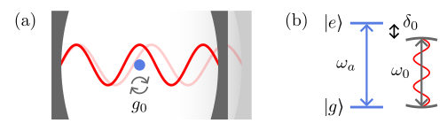
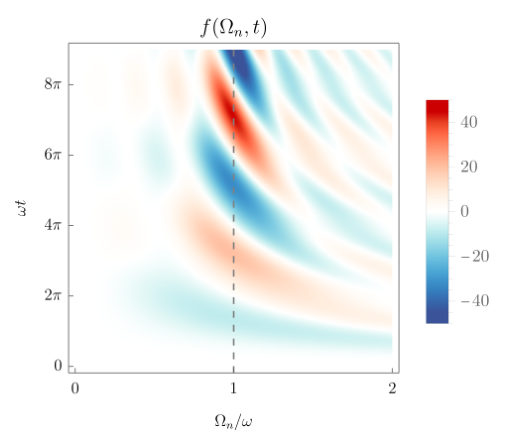
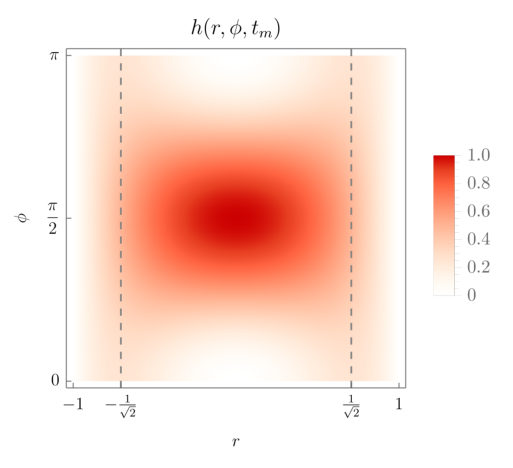
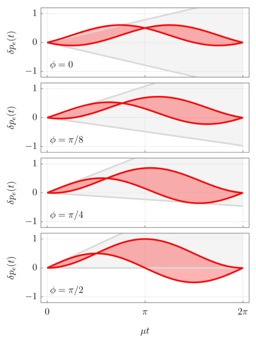
Summary. This paper analyzes how an atom-cavity system can simulate the effects of a gravitational wave by modulating the cavity mirrors. Using perturbation theory and multiple-scales analysis, the authors show that this modulation causes a measurable, resonantly enhanced change in the atomic transition probability. This establishes a viable quantum optical platform for testing analogue general relativistic effects.
Why it may be interesting. This work directly bridges quantum optics (cavity QED) with fundamental physics (General Relativity) by proposing a concrete, measurable analogue experiment, which is highly relevant to AMO physicists working on open quantum systems.
Main problem. To establish a realistic and experimentally accessible platform for probing analogue general relativistic effects by simulating the influence of a plane gravitational wave on atom-field interactions.
Main result. The modulation induced by the gravitational wave analogue is shown to be resonantly enhanced, leading to measurable imprints in the atomic transition probability.
Method. The analysis employs time-dependent perturbation theory and the multiple-scales approach to calculate the first-order correction to the atomic transition probability.
Model / system. The system is a two-level atom strongly coupled to a single quantized mode of the electromagnetic field inside an optical cavity. The gravitational wave effect is simulated by modulating the cavity resonance frequency via time-dependent boundary conditions.
Key observables. The primary observable is the correction to the atomic emission rates or the excited-state population probability, $p_e(t)$. The classical Fisher information $I_C(t)$ is used to quantify measurement sensitivity.
Important parameters / regimes. Key parameters include the modulation amplitude $A$, the driving frequency $\omega$, and the detuning $\delta_0$. Resonance is achieved when the cavity frequency matches the modulation frequency.
Assumptions / limitations. The analysis assumes the modulation is adiabatic and treats the modulation as a small perturbation to the standard Jaynes-Cummings model.
Figures summary. Figure 1 shows the schematic setup involving a cavity, atom, and movable mirror. Figure 2 illustrates the frequency dependence of the probability correction, showing resonance. Figure 3 shows the classical Fisher information.
Paper structure. The paper develops the Hamiltonian, applies perturbative expansions to find the probability correction $\delta p_e(t)$, and then uses the multiple-scales method to extend the analysis to longer coherence times, culminating in the calculation of the optimal measurement time via Fisher information.
One of the proposed platforms in which both quantum and general relativistic effects can become observable is an atom interacting with the electromagnetic field in a gravitational-wave background. The periodic modulation of field modes induced by variations of the spacetime metric modifies the atomic emission spectrum. Notably, the temporal modulation of the mode-frequency induced by a plane gravitational wave can be simulated through modulated boundary conditions, such as moving cavity mirrors. We analyze the impact of this modulation on atom-field interactions in the strong atom-cavity coupling regime, where Rabi oscillations occur. We show analytically that the modulation is resonantly enhanced, leading to measurable imprints in the atomic transition probability. This establishes a realistic and experimentally accessible platform for probing analogue general relativistic effects in quantum optical systems.
Authors: Yansheng Zhang, Feiyang Wang, Yi Jiang, Alexander C. Jenkins, Paul H. C. Wong, Christoph Eigen, Gehrig Carlse, Zoran Hadzibabic
Type: experiment · Category: quantum gases · PDF: https://arxiv.org/pdf/2608.20311v1
Analysis basis: full PDF text, analyzed in chunks
Topic relevance: 🔥 analog quantum simulation 4/5 · quantum measurements 2/5 · Keldysh / 2PI / non-Gaussian methods 1/5 · quantum optics experiment 1/5
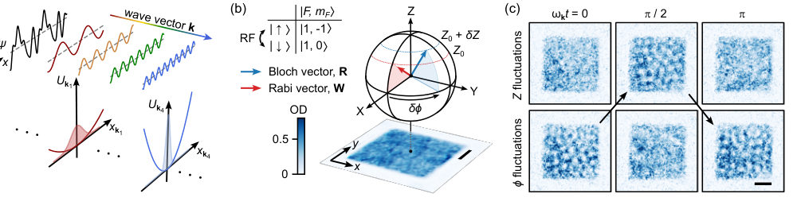
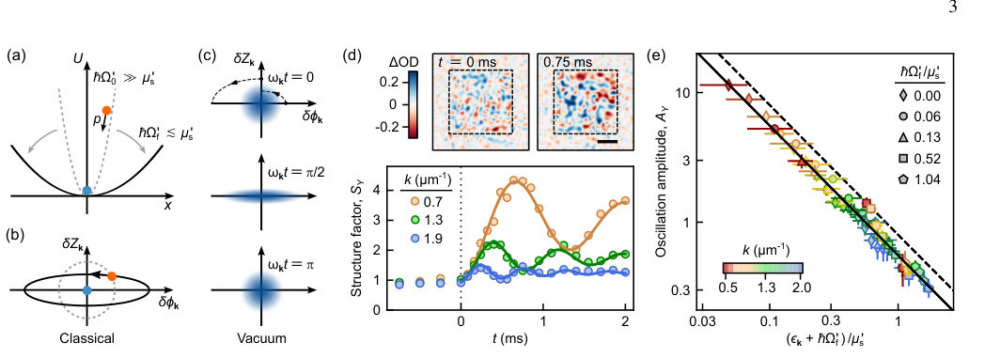
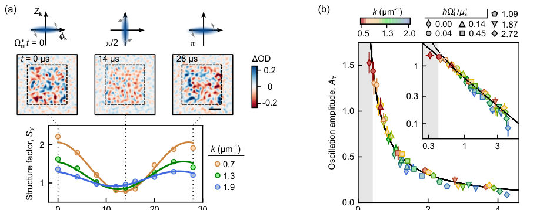
Summary. This research reports the direct experimental observation of spatial vacuum fluctuations in a two-component Bose-Einstein condensate. By tuning the system into a regime emulating a sine-Gordon field, the authors measured fluctuation spectra that match theoretical predictions for the quantum vacuum state. This work establishes the BEC as a powerful quantum simulator for studying fundamental quantum field phenomena.
Why it may be interesting. This work provides a highly controlled, tabletop platform to simulate and verify predictions from quantum field theory regarding vacuum structure, which is typically only accessible in extreme astrophysical environments.
Main problem. The paper aims to directly observe and measure the spatial vacuum fluctuations of a quantum field, which are fundamental manifestations of quantum mechanics.
Main result. The measured spectrum of fluctuations agrees with theoretical predictions for a vacuum state, confirming the existence of these quantum correlations in the laboratory setting.
Method. The experiment uses in-situ state-selective imaging on a Bose-Einstein condensate to measure the structure factor and fluctuation correlations of the spin degrees of freedom.
Model / system. The physical system is a homogeneous planar atomic Bose-Einstein condensate (BEC) of $^{39} ext{K}$ atoms with two coherently coupled spin components. The system's dynamics are modeled to emulate a massive relativistic sine-Gordon field in the appropriate interaction regime.
Key observables. Fluctuations in the relative phase ($\delta\phi$) and population imbalance ($\delta Z$), and the structure factor $S(k)$.
Important parameters / regimes. The study explores different regimes, including the Rabi regime and the Josephson regime, and compares vacuum fluctuation scaling ($\propto \omega^{-1}_k$) against thermal fluctuation scaling ($\propto \omega^{-2}_k$).
Assumptions / limitations. The analysis assumes the ability to decouple spin and density dynamics and must account for the attenuation of measured correlations due to imperfect atom detection efficiency ($\gamma < 1$).
Figures summary. Figure 1 illustrates the concept of vacuum fluctuations and the experimental setup using BEC spin degrees of freedom. Figure 2 shows the time evolution of fluctuations after a quench, comparing classical and quantum evolution.
Paper structure. The paper builds from the theoretical necessity of observing vacuum fluctuations, details the experimental platform (BEC spin dynamics), presents measurements across different parameter regimes (Rabi vs. Josephson), and finally analyzes the measured fluctuation spectra against theoretical predictions.
Heisenberg uncertainties lead to inevitable fluctuations in the measurement outcomes for quantum-mechanical observables. For quantum fields, these uncertainties result in random spatial structures in snapshots of a field, even when the field is in its ground (vacuum) state. Such `vacuum fluctuations' are at the heart of a wide range of phenomena, from spontaneous decay processes to the Casimir force and Hawking radiation. Their existence is a key manifestation of the quantumness of the physical world, but usually it is only their consequences that are directly observed. Here, we directly observe spatial vacuum fluctuations of a bosonic quantum field. Our experiments are based on a homogeneous planar atomic Bose--Einstein condensate. The condensate comprises two coherently coupled interacting components (spin states), and the quantum field describes its spin degrees of freedom. In the regime where the interactions dominate over the coherent coupling, our system emulates a (massive relativistic) sine-Gordon field. Images of the field reveal simultaneous fluctuations on different length scales, with scale-dependent amplitudes consistent with theoretical predictions for a vacuum state. Observing such fluctuations in the sine-Gordon limit opens many possibilities for laboratory simulations of relativistic fields in regimes that are presently not theoretically tractable.
Authors: Rui Li, Yuhang Wang, Chunxiao Du, Shikun Zhang, Zheng Qin, Wenxiu Li, Hao Zhang, Zhisong Xiao
Type: both · Category: quantum information and computing · PDF: https://arxiv.org/pdf/2608.20170v1
Analysis basis: full PDF text, analyzed in chunks
Topic relevance: 🔥 QC/QI experiment 4/5 · quantum measurements 3/5 · analog quantum simulation 1/5
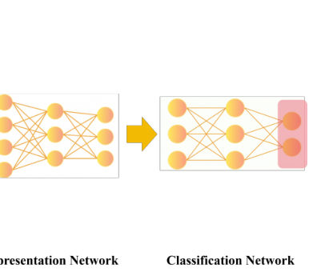
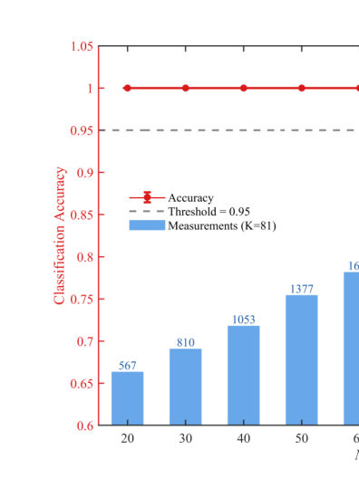
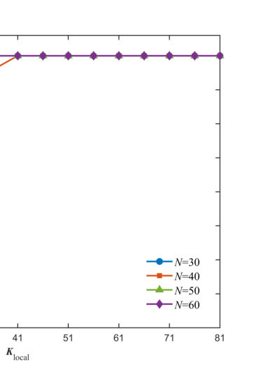
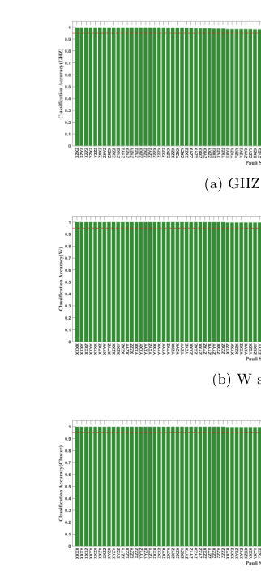
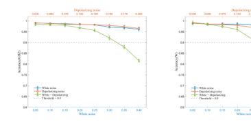
Summary. This paper introduces a scalable framework to determine the entanglement structure of large quantum systems by measuring local correlations rather than performing full state tomography. By using a single, carefully chosen local Pauli basis, the measurement effort scales linearly with system size, achieving high accuracy up to 100 qubits in simulation and validating the approach on superconducting hardware.
Why it may be interesting. This work directly addresses the scalability bottleneck in characterizing complex quantum states, providing a concrete, resource-efficient measurement protocol applicable to near-term quantum hardware.
Main problem. The central challenge is identifying the entanglement structure (unentangled block partitions) of large many-body quantum states without resorting to exponentially scaling full quantum state tomography.
Main result. The authors developed a scalable protocol using local joint measurements that achieves over 95% accuracy for up to 100 qubits in simulation, and validated it up to 13 qubits on superconducting hardware.
Method. The method employs local Pauli measurements across overlapping windows, forming a feature vector whose dimension grows only linearly with system size, allowing for classification via a trained neural network.
Model / system. The study focuses on $N$-qubit chains exhibiting multipartite entanglement (GHZ-, W-, and cluster-type structures). The protocol is tested in both noisy simulations (up to 100 qubits) and on superconducting quantum processors (up to 13 qubits).
Key observables. Classification accuracy of entanglement structure, local Pauli measurement outcomes, and the measurement cost (number of required measurement configurations).
Important parameters / regimes. System size $N$ (up to 100 in simulation, 13 on hardware), window size $R$, and the number of local Pauli bases used ($K_{ ext{local}}$).
Assumptions / limitations. The structural information is assumed to be redundantly encoded across local Pauli measurements, and the protocol relies on selecting a single, representative local basis satisfying a boundary-matching condition ($p_1 = p_R$).
Figures summary. Figure 1 illustrates the local-joint-measurement pipeline using overlapping windows. Figure 2 and 3 compare the measurement cost and accuracy when using the full set of local bases versus a single, optimized representative basis.
Paper structure. The paper first establishes the problem of exponential scaling in entanglement characterization. It then introduces the scalable framework using local joint measurements, demonstrating the efficiency gain by reducing the measurement effort to be independent of system size. Finally, it validates the protocol both in noisy simulations and on physical quantum hardware.
Identifying the entanglement structure of a many-body quantum state, namely how its constituents partition into unentangled blocks, is a central task in quantum information science, yet conventional tomography scales exponentially with system size. Here we introduce a scalable framework that recognizes large-scale entanglement structures directly from local correlation fingerprints. By choosing a representative local Pauli basis that satisfies a boundary-matching condition p_1 = p_R, the entire chain is read out in a single measurement configuration, keeping the measurement effort independent of system size. In noisy simulations, this single-basis protocol classifies GHZ-, W-, and cluster-type structures among 30 candidate partitions with a mean accuracy exceeding 95% for systems of up to 100 qubits. We further validate the protocol on a superconducting quantum processor, where it reliably classifies block structures for systems of up to 13 qubits before noise- and depth-induced degradation sets in at larger sizes. By mapping these failure modes explicitly, our results delineate the boundary of hardware-level scalability and point to a concrete strategy for characterizing entanglement structure on near-term quantum devices.
Authors: Matthias Thomas Nowinski, Ivo Sachs
Type: theory · Category: quantum gases · PDF: https://arxiv.org/pdf/2608.19327v1
Analysis basis: full PDF text, analyzed in chunks
Topic relevance: 🔥 Keldysh / 2PI / non-Gaussian methods 4/5 · analog quantum simulation 3/5
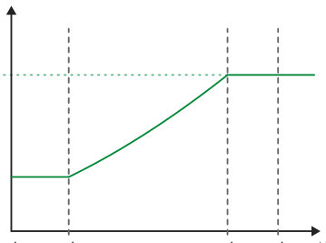
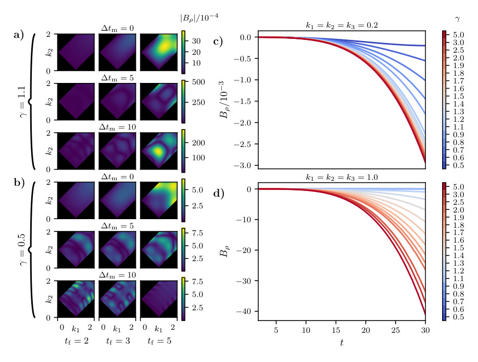
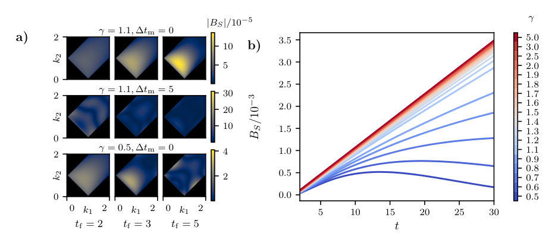
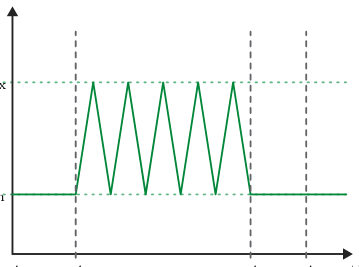
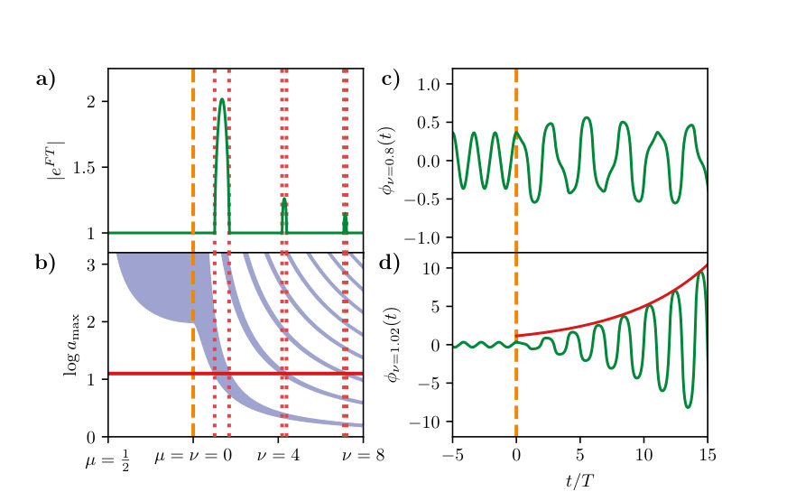
Summary. This paper uses Bose-Einstein condensates as quantum simulators to study interacting quantum field theories relevant to the early universe, specifically focusing on inflationary bispectra. By analyzing the system in various time-dependent backgrounds, the authors demonstrate that periodic driving can induce resonant growth in correlation functions, offering a pathway for experimental detection of cosmological signatures.
Why it may be interesting. This work directly bridges the gap between fundamental condensed matter systems (BECs) and high-energy cosmology (inflation/de Sitter space), providing a concrete, experimentally accessible platform to test complex quantum field theory predictions.
Main problem. The paper extends the use of Bose-Einstein condensates (BECs) as quantum simulators from free theory phenomena to study interacting theories relevant to early-universe physics, such as inflation.
Main result. The analysis shows that while expanding scale factors lead to expected IR divergences, periodically driven backgrounds can produce resonant correlators that grow linearly and are potentially detectable in experiments.
Method. The authors derive interaction terms mimicking Effective Field Theory (EFT) of inflation and apply quantum field theory techniques (Schwinger-Keldysh formalism) to calculate 3-point correlations (bispectra) in time-dependent backgrounds.
Model / system. The system is a BEC of a cold atom gas, modeled as a relativistic scalar field $\Phi$ in a time-dependent Friedmann–Lemaître–Robertson–Walker (FLRW) background. The analysis focuses on the phase fluctuations ($\phi$) of the condensate.
Key observables. Momentum space 3-point function (bispectrum) of density and phase fluctuations, and the resonant growth of correlators.
Important parameters / regimes. The dimensionless coupling $\kappa$, the scale factor $a(t)$ (especially periodic/triangle wave profiles), and the resonance condition defined by the ratio $a_{\max}/a_{\min}$.
Assumptions / limitations. The analysis assumes the BEC is very large, boundary effects are negligible, and approximations are made when solving the mode equations for different scale factor regimes.
Figures summary. Figures illustrate the scale factor $a(t)$ interpolating between different regimes and visualize resonant conditions in the short wavelength regime, showing clear resonant bands.
Paper structure. The paper progresses from deriving the effective action for the BEC phase fluctuations, to establishing the formalism for calculating correlators in an FLRW background, and finally analyzing the mode functions and bispectra in specific cosmological regimes (accelerating, decelerating, and periodic).
Bose-Einstein condensates have been used successfully as quantum simulators for early-universe particle production. Here we extend this analogy to the interacting theory. To this end, we compute the leading interaction terms expected in a general experimental setup that determine the 3-point correlations. We apply them to cosmologically motivated expanding model universes, but also periodically oscillating ones. While expanding scale factors do not necessarily lead to easily observable signatures due to experimental constraints on the realizable scale factor, periodically driven ones produce resonant correlators that grow linearly over time and lend themselves well to experimental detection. One direct application of this analysis is the experimental study of late-time infrared divergencies often discussed in the context of massless scalars in de Sitter space.
Authors: Dnan A. E. Hajomer, Huy Q. Nguyen, Ivan Derkach, Andreas B. Kidmose, Edoardo Rossi, Mattia Sabatini, Yoann Pietri, Marco Avesani, Francesco Vedovato, Michael Hentschel, Radim Filip, Giuseppe Vallone, Vladyslav Usenko, Tobias Gehring, Soren Forchhammer, Paolo Villoresi, Ulrik L. Andersen
Type: experiment · Category: quantum information and computing · PDF: https://arxiv.org/pdf/2608.20088v1
Analysis basis: full PDF text, analyzed in chunks
Topic relevance: 🔥 quantum optics experiment 4/5 · QC/QI experiment 1/5 · interference shaping light 1/5 · quantum measurements 1/5
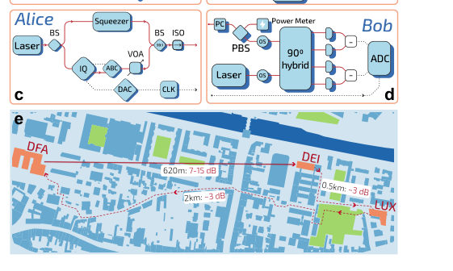
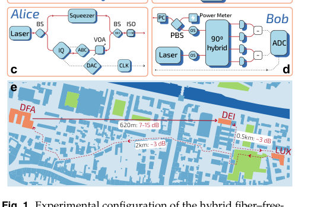
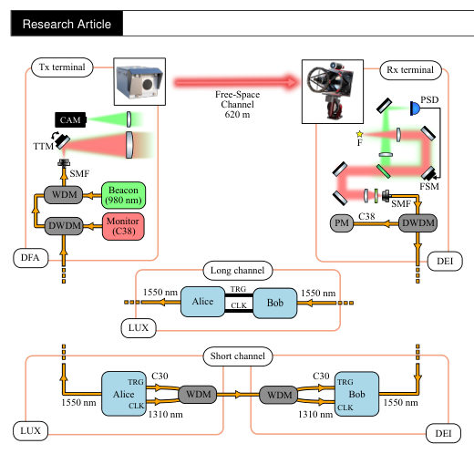
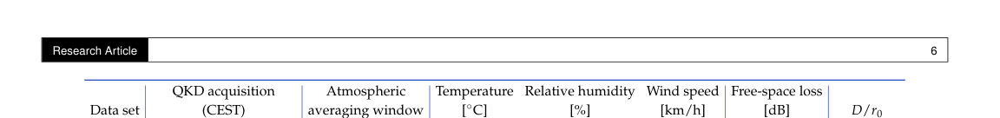
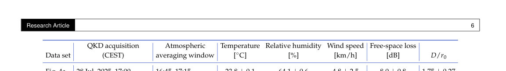
Summary. This paper demonstrates CV-QKD over a realistic hybrid channel combining optical fibre and free-space links. The key innovation is a unified adaptive post-processing framework that manages channel fluctuations by adapting the data processing rather than the optics. This successfully establishes high secret-key rates, paving the way for heterogeneous quantum networks.
Why it may be interesting. This work directly addresses the practical implementation of quantum networks by solving the complex engineering challenge of integrating disparate physical media (fiber/free-space) into a single, functional quantum communication link.
Main problem. Demonstrating Continuous-Variable Quantum Key Distribution (CV-QKD) over a complex, deployed hybrid channel combining optical fibre and free-space links, which requires handling contrasting channel requirements.
Main result. The authors achieved asymptotic secret-key rates of 0.42 Mbit/s (coherent) and 0.93 Mbit/s (squeezed) by developing a unified adaptive post-processing framework.
Method. The core methodology involves applying an adaptive post-processing framework that couples transmittance-based clustering, residual-fading mitigation (de-fading), and rate-adaptive blind reconciliation.
Model / system. The experiment uses a locally generated local oscillator (LLO) CV-QKD setup transmitting both Gaussian-modulated coherent and squeezed states over a hybrid link comprising 2 km of deployed fibre and a 620-m free-space atmospheric link.
Key observables. Asymptotic secret-key rates (Mbit/s), key lengths (bits), and the channel transmittance ($\eta$) and excess noise ($\epsilon$).
Important parameters / regimes. Total loss up to 20 dB; the contrast between stable fibre transmission and fluctuating atmospheric propagation.
Assumptions / limitations. The security analysis relies on Gaussian extremality applied to the covariance matrix in fading channels, and the authors treat detector efficiency and electronic noise as trusted.
Figures summary. Figure 1 illustrates the experimental setup for the hybrid CV-QKD system in Padova, detailing components for both coherent and squeezed state transmission across the free-space and fibre segments.
Paper structure. The paper establishes the problem of hybrid channel QKD, details the use of LLO schemes with coherent and squeezed states, and focuses heavily on the development and validation of the unified adaptive post-processing framework to extract key rates.
Quantum networks will combine optical fibre with free-space links, yet continuous-variable quantum key distribution (CV-QKD) has been developed predominantly for one medium or the other, while operation across concatenated fibre-free-space channels remains largely unexplored. The two media impose contrasting requirements: fibre transmission is stable and permits long processing intervals, whereas atmospheric propagation imposes transmittance fluctuations that degrade security and must be resolved on short timescales. Here we demonstrate a locally generated local oscillator CV-QKD with both Gaussian-modulated coherent and squeezed states over a deployed hybrid channel comprising a 620-m free-space link and 2 km of deployed fibre, with a total loss up to 20 dB. Rather than adapting the optics to each medium, we move channel adaptation to the post-processing, through a unified adaptive post-processing framework coupling transmittance-based clustering, residual-fading mitigation by covariance-matrix averaging or de-fading, and rate-adaptive blind reconciliation, which alone recovers up to 19% additional key. The same adaptive-processing principle is applied to both protocols, while accounting for their different security analyses and statistical requirements, yielding asymptotic secret-key rates of 0.42 Mbit per sec for the coherent-state protocol and 0.93 Mbit per sec for the squeezed-state protocol under the respective channel conditions, and establishing squeezed-state CV-QKD over a deployed atmospheric channel. These results show that adaptation to the transmission medium can largely be transferred to the data-processing layer, providing a route towards heterogeneous quantum networks spanning fibre, terrestrial free-space and satellite links.
Authors: Antti Peltola, Olli Siltanen, Kimmo Luoma, Konstantinos S. Daskalakis
Type: theory · Category: other · PDF: https://arxiv.org/pdf/2608.20340v1
Analysis basis: full PDF text, analyzed in chunks
Topic relevance: 🔥 Tavis-Cummings & cavity-many-emitter 4/5 · analog quantum simulation 2/5
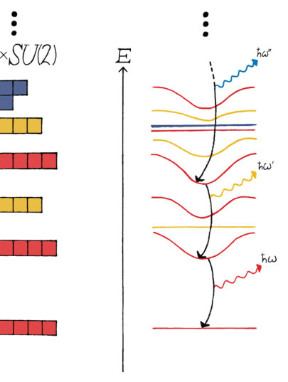
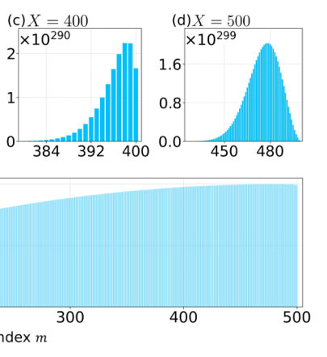
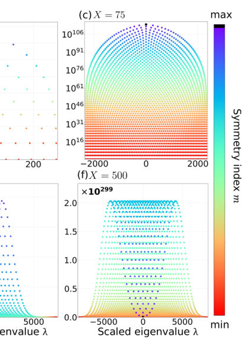
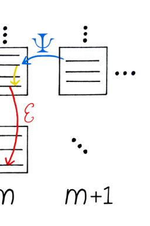
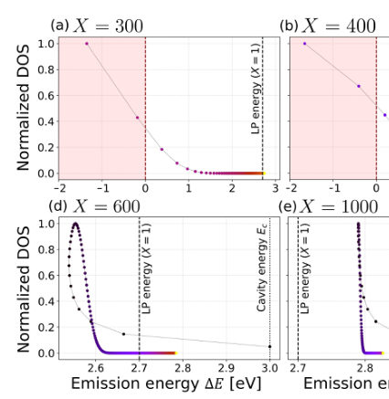
Summary. This paper develops a group-theoretic method to solve the spectrum of the Tavis-Cummings model for an arbitrary number of excitations. By exploiting the symmetry of the Hamiltonian, the authors manage the exponentially growing Hilbert space, providing exact predictions for polariton physics. This framework is crucial for advancing theoretical understanding of strongly coupled quantum light-matter systems.
Why it may be interesting. This work provides a powerful, generalizable theoretical tool for analyzing complex, many-body quantum optical systems, moving beyond the standard few-excitation approximations that limit technological modeling.
Main problem. The paper addresses the theoretical challenge of extending the description of strong light-matter coupling (polaritons) from the limited single-excitation case to systems involving an arbitrary number of excitations.
Main result. The authors developed a group-theoretic framework that allows for the exact calculation of the spectrum and eigenstates for arbitrary numbers of excitations, revealing new physics inaccessible in simpler regimes.
Method. The core method involves exploiting the symmetry of the Tavis-Cummings Hamiltonian using representation theory (Schur-Weyl duality) to decompose the exponentially large Hilbert space into manageable, irreducible blocks.
Model / system. The system models $N$ two-level quantum emitters coupled uniformly to a single optical cavity mode, described by the Tavis-Cummings Hamiltonian under the Rotating-Wave Approximation. The analysis focuses on the conserved total excitation number $X$.
Key observables. Eigenvalues of the Hamiltonian ($E^{(X,m)}_k$), average excitation contents ($\langle n_c angle, \langle n_{TLS} angle$), and transition probabilities between excitation manifolds.
Important parameters / regimes. The number of emitters ($N$), the total excitation number ($X$), and the symmetry index ($m$). The analysis is particularly focused on the resonant condition ($E_{TLS} = E_c$).
Assumptions / limitations. The analysis relies on the Rotating-Wave Approximation (RWA), which conserves the total excitation number $X$, and utilizes asymptotic limits ($N o \infty$) for certain calculations.
Figures summary. Figures illustrate the dimension distribution of irreducible representations $V^{(X)}_m$ for large $N$, and plot the evolution of emission energy versus excitation number $X$, showing a collapse towards the cavity energy $E_c$ when $X > N/2$.
Paper structure. The paper systematically builds the theoretical framework by first establishing the symmetry decomposition of the Hilbert space using group theory. It then derives the structure of the reduced interaction matrix, calculates the eigenvalues and average excitation contents for small $X$, and finally analyzes asymptotic limits to determine transition probabilities and multiplicity distributions.
Strong light-matter interactions in optical microcavities give rise to hybrid light-matter states known as polaritons. While actively used in modern technologies, theoretical descriptions of such systems are often restricted to the single-excitation case, limiting their ability to capture many-excitation physics and hindering further technological advancements. Here, by exploiting the combinatorial structure of quantum emitters, we investigate the Tavis-Cummings model with arbitrary number of excitations. We derive the structure and properties of its eigensystem and identify allowed radiative transitions in systems of realistic size scales. Our work reveals new behavior inaccessible to the few-excitation regime, while also providing a framework to reduce the computational complexity of similar systems with exponentially growing Hilbert spaces.
Authors: Jiani Fu, Zewen Zhang, Eduardo Ibarra-García-Padilla
Type: both · Category: strongly correlated electrons · PDF: https://arxiv.org/pdf/2608.20131v1
Analysis basis: full PDF text, analyzed in chunks
Topic relevance: 🔥 analog quantum simulation 4/5 · quantum measurements 2/5
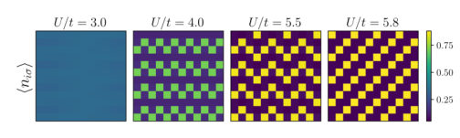
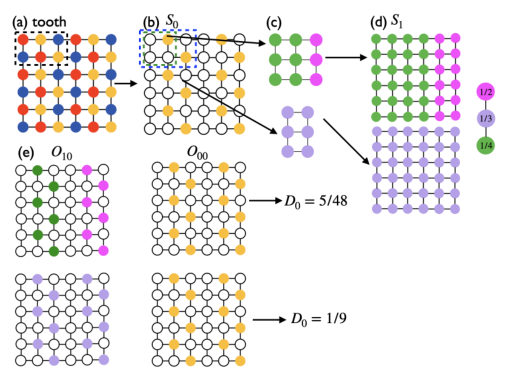
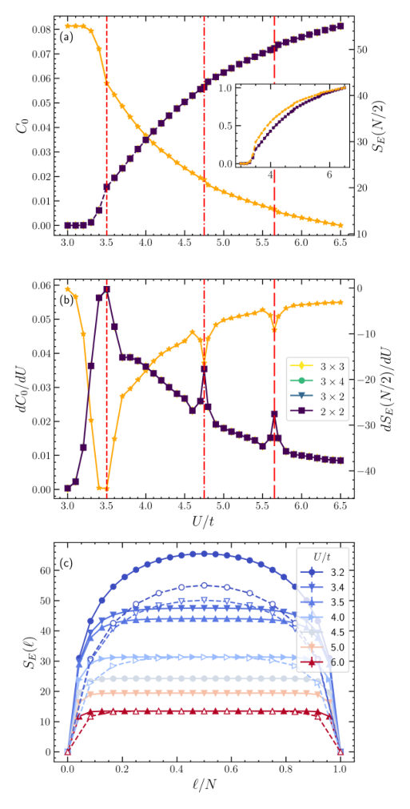
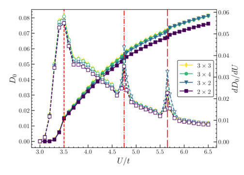
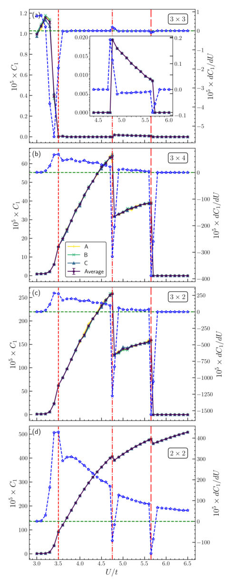
Summary. This work introduces structural complexity as a novel, theory-free diagnostic tool for analyzing quantum many-body systems modeled by the SU(3) Fermi Hubbard Model. By applying this measure to mean-field snapshots, the authors demonstrate that structural complexity correlates strongly with entanglement entropy and accurately maps out the complex phase diagram of the system. This validates the technique for interpreting future measurements from quantum gas microscopes.
Why it may be interesting. It bridges the gap between advanced theoretical diagnostics (structural complexity, entanglement entropy) and direct, theory-free interpretation of cutting-edge experimental data from quantum gas microscopes.
Main problem. Developing theory-free numerical techniques to extract physical information from spin-resolved projective measurements of quantum many-body systems.
Main result. Structural complexity was shown to be strongly correlated with entanglement entropy and proved to be an efficient, theory-free tool for accurately locating phase boundaries in the SU(3) FHM.
Method. The study uses mean-field theory to generate spin-resolved density distributions, followed by calculating structural complexity via rectangular coarse-graining windows.
Model / system. The system is the SU(3) Fermi Hubbard Model (FHM) studied on a 2D square lattice at 1/3-filling, relevant to ultracold alkaline-earth atoms.
Key observables. Structural Complexity ($C_0, C_1$), Entanglement Entropy ($S_E$), and spin-resolved density distributions ($\langle n_{i\sigma} angle$).
Important parameters / regimes. Interaction strength ratio ($U/t$), filling fraction (1/3), and phase boundaries defined by $U/t$ (e.g., 3.50, 4.75, 5.65).
Assumptions / limitations. The primary approximation used is Mean-Field Theory (MFT) to generate the initial density snapshots for analysis.
Figures summary. Figure 1 shows mean-field ground state density profiles illustrating transitions between metallic, tooth, zig-zag, and stripe phases. Figure 3 demonstrates the strong proportionality between $C_0$ and $S_E(N/2)$, and the alignment of their derivatives at phase boundaries.
Paper structure. The paper first introduces the problem of analyzing SU(N) FHM measurements, then details the structural complexity measure applied to MFT snapshots, and finally presents results showing the correlation between complexity, entanglement entropy, and phase diagram mapping.
Two-dimensional quantum gas microscopy provides an unparalleled tool to study quantum many-body systems using ultracold atoms. For the SU(2) Fermi Hubbard model (FHM), access to spin-resolved projective measurements has been vital for quantifying correlation functions and mapping out the phase diagram. Recent progress in quantum gas microscopy for experiments with ultracold alkaline-earth atoms, which are well described by the SU(N) FHM and are predicted to host exotic ground-state phases, calls for the development of theory-free numerical techniques to extract physical information from their projective measurements. To that end, we evaluate the multiscale structural complexity of snapshots of an SU(3) FHM in the square lattice at $1/3$-filling. We employ mean-field theory to generate spin-resolved density distributions and compute their structural complexity using rectangular coarse-graining windows. We demonstrate that these complexities are linked to relevant physical observables such as the entanglement entropy, and are extremely sensitive for locating phase boundaries. The results presented here validate the structural complexity as an efficient and reliable tool for analyzing the outputs of SU(N) quantum gas microscopes, offering a theory-free property, immediately accessible to experiments.
Authors: Karthik Chandrashekara, Christian Gölzhäuser, Lily Platt, Jianshun Gao, Julian Kusch, Lennart Hoenen, Manon Ballu, Wyatt Kirkby, Lauriane Chomaz
Type: experiment · Category: quantum gases · PDF: https://arxiv.org/pdf/2608.20327v1
Analysis basis: full PDF text, analyzed in chunks
Topic relevance: 🔥 analog quantum simulation 4/5 · Frenkel-Kontorova 1/5
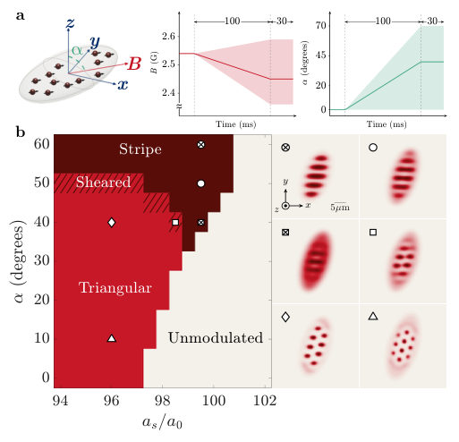
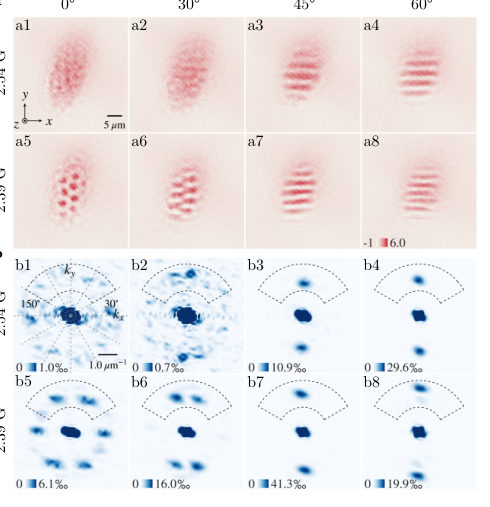
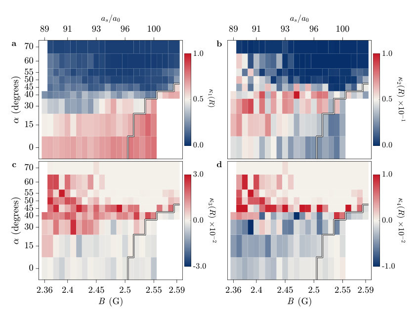
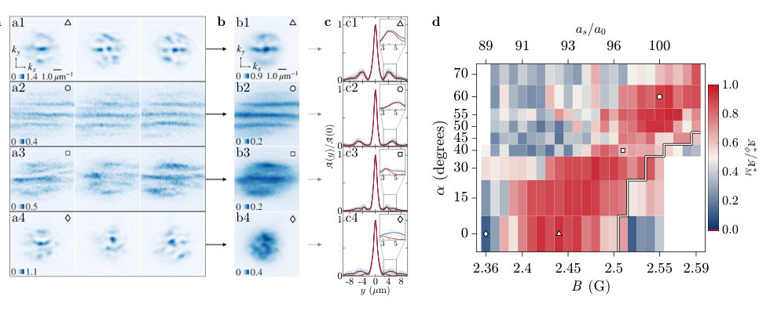
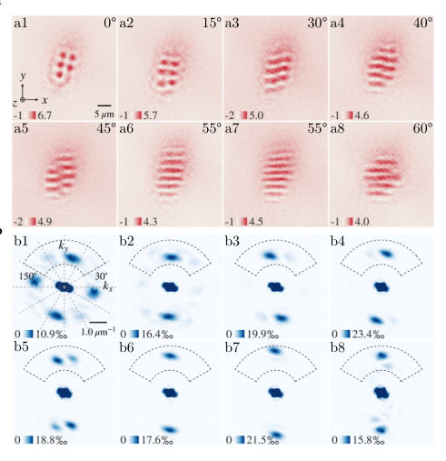
Summary. This paper reports experimental evidence for competing triangular and stripe supersolid orders in a dipolar quantum gas. By tuning external parameters like dipole orientation and interaction strength, the researchers mapped out a complex phase diagram. The study uses advanced spectral analysis to characterize the structural transitions and confirms the interplay between spatial order and global phase coherence.
Why it may be interesting. This work provides a highly controllable platform to study intertwined symmetry-breaking phenomena in 2D supersolids, offering quantitative measurements of critical behavior associated with competing crystalline orders.
Main problem. The study investigates the competition and coexistence of multiple spatial orders (triangular and stripe) in dipolar supersolids, and how global phase coherence interacts with this structural order.
Main result. The authors experimentally formed and characterized both competing triangular and stripe density-modulated states, identifying the structural phase transition between them and observing these structures in both phase-coherent and phase-incoherent regimes.
Method. Structural analysis was performed by computing the 2D power spectrum of in-situ density distributions, while phase coherence was probed using time-of-flight measurements.
Model / system. The system is a dipolar quantum gas of highly magnetic atoms (e.g., Dy) confined in a surfboard-shaped trap. Control is achieved by tuning the contact interaction strength ($a_s$) and the dipole tilt angle ($\alpha$).
Key observables. Structural order parameter, 2D power spectrum $S(\mathbf{k})$, and the ratio of phase to modulation amplitudes ($A_\phi/A_M$) from TOF images.
Important parameters / regimes. Dipole tilt angle ($\alpha$) and contact interaction strength ($a_s$), which control the transition between triangular and stripe phases.
Assumptions / limitations. The analysis relies on defining structural order parameters from the power spectrum and distinguishing between different spatial arrangements based on spectral signatures.
Figures summary. Figures illustrate the experimental protocol and a phase diagram ($\alpha$ vs. $a_s$) showing the predicted states, alongside in-situ images and power spectra confirming the presence of triangular and stripe patterns.
Paper structure. The paper follows a structure of establishing the physical platform, presenting theoretical predictions via simulations, and then detailing experimental measurements using structural and coherence diagnostics to map out the complex phase diagram.
Supersolids are exotic quantum states in which long-range phase coherence coexists, and may interplay, with emergent spatial orders. A particularly rich phase diagram featuring several competing spatial orders is predicted for dipolar supersolids with two-dimensional crystals, yet the experimental observation of this structural variety has remained limited. Here we experimentally form competing triangular and stripe density-modulated states in a quantum gas of highly magnetic atoms confined in a surfboard-shaped trap by tuning contact interaction strength and dipole orientation. We define a structural order parameter and study its statistical behavior. Thereby, we identify both the triangular and stripe phases and the transition between them, the associated critical behavior being marked by enhanced non-Gaussian fluctuations. Furthermore, we observe each spatial structure in both the phase-coherent supersolid regime and the phase-incoherent insulating one, near and far from the unmodulated-to-modulated transition, respectively. Our results establish a versatile platform in which multiple phases of the two-dimensional-supersolid phase diagram, and more generally, intertwined symmetry-breaking phenomena, can be investigated.
Authors: Arjo Dasgupta, Luis Santos
Type: theory · Category: quantum gases · PDF: https://arxiv.org/pdf/2608.20173v1
Analysis basis: full PDF text, analyzed in chunks
Topic relevance: 🔥 analog quantum simulation 4/5
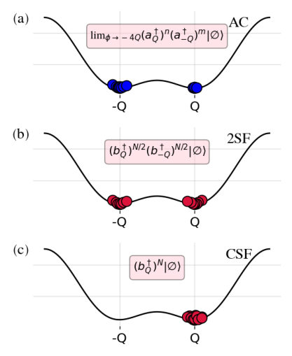
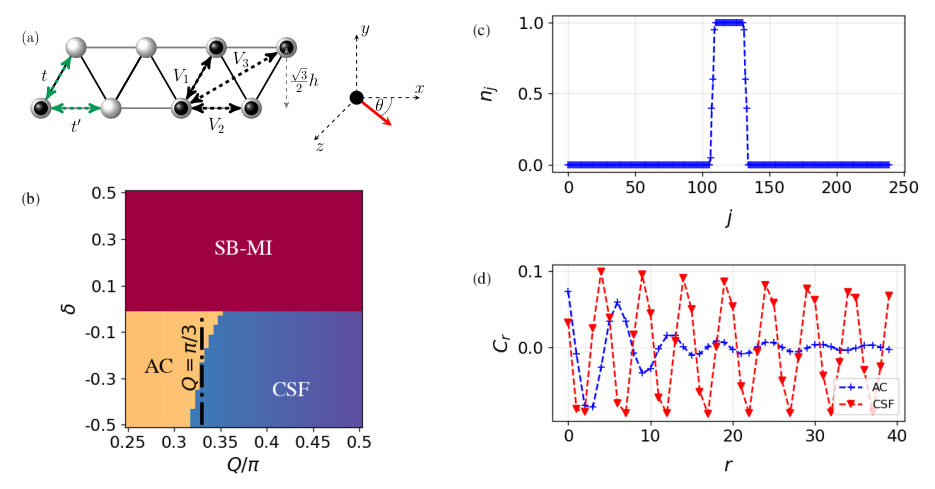
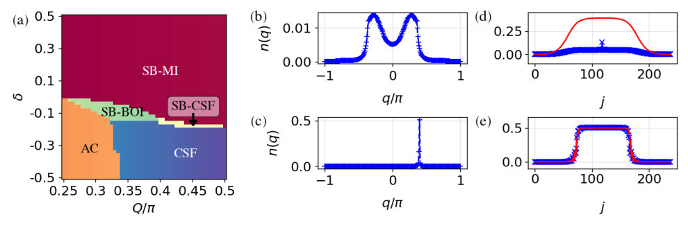
Summary. This paper theoretically explores anyon condensates formed by hard-core dipoles in triangular ladders, modeling the system with an extended Bose-Hubbard Hamiltonian. Using a combination of perturbation theory and DMRG, the authors map out a complex phase diagram showing transitions between anyon condensates, chiral superfluids, and Mott insulators. The findings are crucial for understanding how dipolar interactions stabilize exotic quantum states in ultracold atomic systems.
Why it may be interesting. This work directly addresses the physics of dipolar quantum gases, a major area in AMO physics, by predicting exotic quantum phases like anyon condensates and mapping out their stability boundaries.
Main problem. The study investigates the interplay between frustration and long-range interactions in dipolar systems, focusing on the robustness and nature of anyon condensates.
Main result. The paper establishes that balanced anyon condensates are robust against small deviations from exactly-solvable conditions, while the phase diagram reveals rich transitions between AC, chiral superfluids, and various insulating phases.
Method. The analysis combines analytical perturbation theory for energy corrections with numerical Density Matrix Renormalization Group (DMRG) calculations.
Model / system. The system is hard-core dipoles confined to triangular ladders, modeled by an extended Bose-Hubbard model equivalent to a modified J1-J2 XXZ Hamiltonian.
Key observables. Single-particle correlations ($C_r$), chirality ($\kappa_j$), and the energy correction ($\Delta E_{n,m}$) are key diagnostics used to distinguish between different quantum phases.
Important parameters / regimes. The parameters $Q$ (related to momentum/geometry) and $\delta$ (deviation from exactly-solvable conditions) dictate the observed phase, with critical points near $Q = \pi/3$.
Assumptions / limitations. The analysis assumes hard-core bosons and relies on perturbation theory for deviations from the exactly-solvable point.
Figures summary. Figures illustrate schematic representations of various phases (AC, 2SF, CSF) and show the phase diagram mapping the boundaries between these states as a function of system parameters.
Paper structure. The paper progresses by first defining the model and the exactly-solvable case, then using perturbation theory to analyze energy corrections upon deviation ($\delta$), and finally using DMRG to map out the full phase diagram showing transitions between different superfluid and insulating regimes.
Hard-core dipoles in triangular ladders are an excellent platform for the study of the interplay between frustration and long-range interactions, well described by a modified version of the celebrated $J_1$--$J_2$ model. Interestingly, as shown in [Phys. Rev. Lett. 109, 227203 (2012)], such a model presents, for particular exactly-solvable conditions, a peculiar phase known as an anyon condensate. We show that balanced anyon condensates are robust against deviations from the exactly-solvable conditions, and discuss the requirements for dipolar orientation and ladder geometry, to realize anyon condensates of dipoles in triangular ladders, whose anyonic nature may be easily revealed by time-of-flight measurements. Moreover, the ground-state physics in the vicinity of the exactly-solvable point is very rich, including a phase transition from anyon condensates into chiral superfluids, and self-bound Mott insulators, bond-order insulators, and chiral liquids.
Authors: Arturo Moncho-Jordá, Alessandro Patti, Fabián A. García-Daza, Alejandro Cuetos
Type: theory · Category: statistical mechanics · PDF: https://arxiv.org/pdf/2608.19884v1
Analysis basis: full PDF text, analyzed in chunks
Topic relevance: Keldysh / 2PI / non-Gaussian methods 3/5 · driven-dissipative phase transition 3/5 · methods for driven-dissipative 3/5 · non-equilibrium universality 3/5 · analog quantum simulation 2/5 · correlated / nonlocal dissipation 2/5 · quantum measurements 2/5 · scars & prethermalization 2/5 · Frenkel-Kontorova 1/5
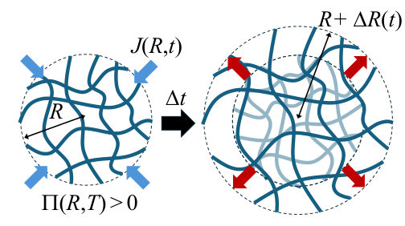
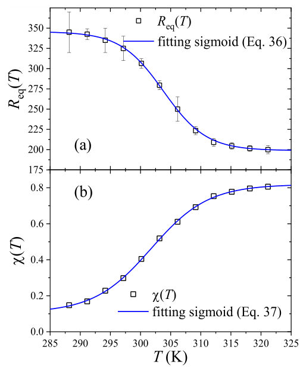
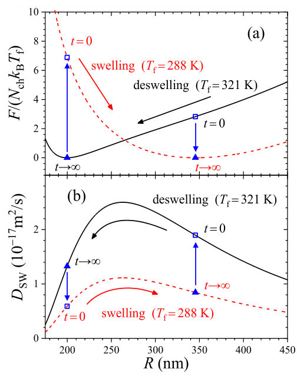
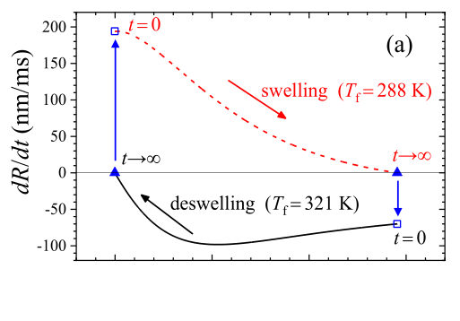
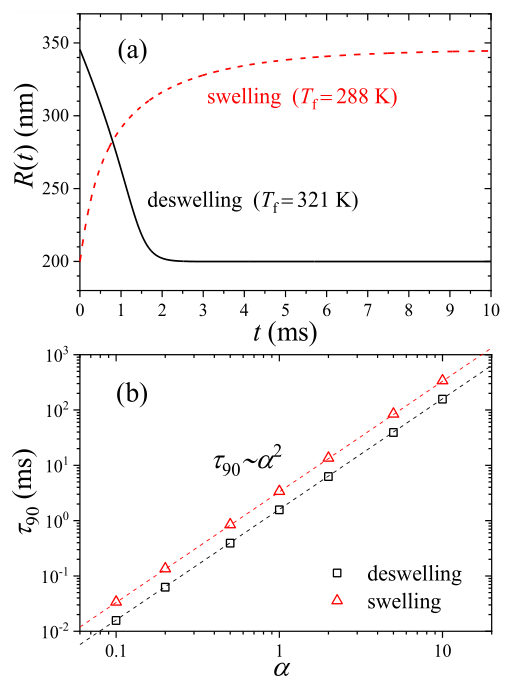
Summary. This paper introduces a solvent-flux theory to model the complex, non-equilibrium swelling and deswelling dynamics of thermoresponsive microgels. It derives a state-dependent mobility that governs the kinetics, predicting key non-linear behaviors such as asymmetric pathways and dynamic hysteresis. The work successfully links solvent transport, mechanical response, and size fluctuations in these soft matter systems.
Why it may be interesting. The framework of non-equilibrium dynamics, coupled transport, and fluctuating potentials is highly relevant to open quantum systems and non-equilibrium statistical mechanics, providing a model for complex relaxation processes.
Main problem. Predicting the nonequilibrium swelling and deswelling kinetics of thermoresponsive microgels, which is challenging due to the coupled evolution of polymer volume fraction, mechanical response, and solvent transport during large volume changes.
Main result. The theory predicts asymmetric swelling/deswelling pathways and shows that finite thermalization times can induce dynamic hysteresis-like loops in the radius-temperature plane.
Method. Development of a solvent-flux theory that models the radius-change rate driven by osmotic-pressure imbalance and resisted by water transport through the polymer network.
Model / system. The study focuses on thermoresponsive microgels, specifically pNIPAM, whose dynamics are governed by a nonlinear, state-dependent diffusion equation derived from solvent flux principles.
Key observables. Swelling diffusion coefficient ($D_{SW}(R, T)$), radius distribution width ($\sigma_R(t)$), and the rate of radius change ($dR/dt$).
Important parameters / regimes. Temperature ($T$), polymer volume fraction ($\phi$), and the characteristic relaxation time ($ au_{SW}$).
Assumptions / limitations. The theory assumes an overdamped, diffusion-controlled solvent transport regime and extends beyond the limitations of the linear-response Tanaka-Fillmore model.
Figures summary. Figure 1 schematically illustrates the driving forces (osmotic pressure imbalance) for swelling and deswelling via solvent flux.
Paper structure. The paper develops the solvent-flux theory, derives the governing non-linear ODE for the swelling coordinate, analyzes the linear-response limit, and extends the model to include stochastic fluctuations and finite thermalization effects.
Thermoresponsive microgels undergo large reversible size changes as temperature alters solvent quality. Predicting their nonequilibrium swelling and deswelling kinetics is challenging because polymer volume fraction, mechanical response, and solvent transport evolve during large volume changes. Here we develop a solvent-flux theory for the dynamics of a spherical microgel. The radius-change rate is driven by the osmotic-pressure imbalance across the particle boundary and resisted by water transport through the polymer network, yielding a nonlinear equation for the global swelling coordinate and a state- and temperature-dependent swelling diffusion coefficient, $D_{\mathrm{SW}}(φ,T)$. In the linear-response regime, the theory recovers Tanaka--Fillmore exponential relaxation and the scaling $τ_\mathrm{SW}\sim R_{\mathrm{eq}}^2γ/K_{\mathrm{eq}}$, while providing a microscopic interpretation of the polymer--solvent friction coefficient $γ$. Beyond this limit, the model retains quadratic size scaling while accounting for state-dependent transport and mechanics. For pNIPAM microgels, it predicts asymmetric pathways, with deswelling faster than swelling over the same temperature interval. Finite thermalization produces a crossover from a microgel-controlled to a thermalization-controlled regime, in which the apparent relaxation time grows linearly with the external thermalization time and hysteresis-like loops emerge in the radius--temperature plane. A stochastic extension based on the Smoluchowski equation predicts transient broadening of the radius distribution during collapse, with maximal fluctuations in the volume-transition region. The theory links solvent transport, nonlinear swelling dynamics, thermalization effects, and nonequilibrium size fluctuations in responsive microgels.
Authors: Alexander K. Hartmann, Satya N. Majumdar, Alberto Rosso
Type: theory · Category: statistical mechanics · PDF: https://arxiv.org/pdf/2608.20226v1
Analysis basis: full PDF text, analyzed in chunks
Topic relevance: Keldysh / 2PI / non-Gaussian methods 3/5 · correlated / nonlocal dissipation 3/5 · methods for driven-dissipative 3/5 · driven-dissipative phase transition 2/5 · non-equilibrium universality 2/5 · quantum measurements 2/5 · Frenkel-Kontorova 1/5 · analog quantum simulation 1/5
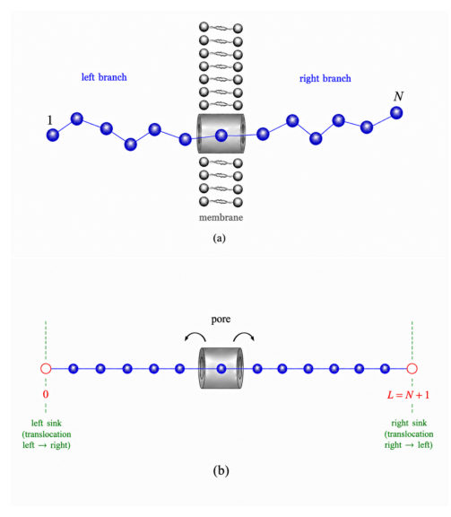
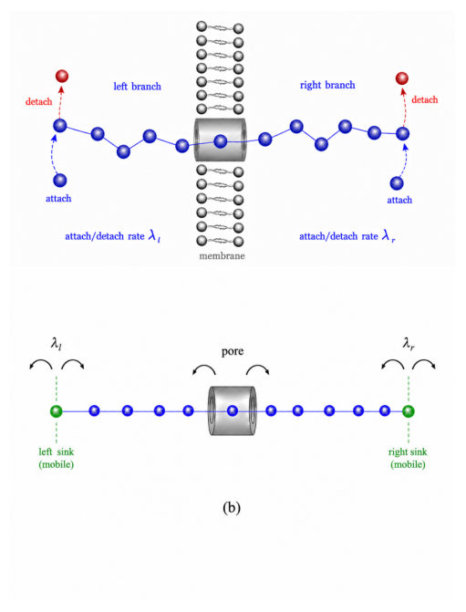
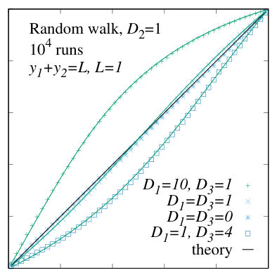
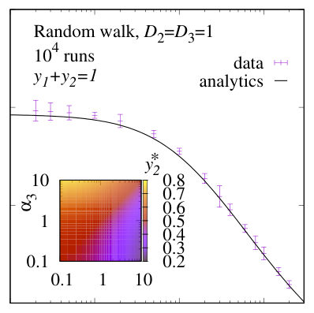
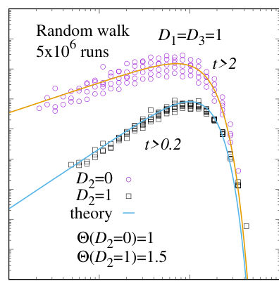
Summary. This work analyzes polymer translocation through a nanopore where the pore size fluctuates stochastically. By mapping this to a three-walker Brownian motion problem, the authors derive exact results for the splitting probability and show that the time and size distributions decay according to power laws dependent on the boundary diffusion rates. The study extends these findings to non-Markovian dynamics using fractional Brownian motion.
Why it may be interesting. The mathematical techniques used to solve the three-walker vicious walker problem with non-trivial boundary diffusion are highly relevant to open quantum systems where boundaries or reservoirs are fluctuating or non-Markovian.
Main problem. The paper investigates the stochastic process of polymer translocation through a nanopore when the chain length fluctuates due to polymerization/depolymerization at the ends.
Main result. The splitting probability, translocation time, and final chain length distributions exhibit power-law tails whose exponents depend continuously on the diffusion constants of the boundaries and the pore.
Method. The complex process is mapped to an equivalent problem of three interacting Brownian walkers (a vicious walker problem) on a line, allowing for exact analytical computation in some cases.
Model / system. The system models a polymer chain translocating through a pore, represented by three coupled Brownian walkers with diffusion constants D1, D2, and D3. The outer walkers represent diffusing boundaries due to stochastic chain end processes.
Key observables. Splitting probability (hitting one sink before the other), probability distribution of translocation time, and probability distribution of the chain length at completion.
Important parameters / regimes. Diffusion constants {D1, D2, D3}, the Hurst exponent H (for fractional Brownian motion), and the initial pore size L.
Assumptions / limitations. The process is modeled by mapping it to three vicious Brownian walkers; the analysis is exact for the three-walker case but requires numerical methods for fractional Brownian motion.
Figures summary. Figures schematically illustrate the polymer translocation process, the equivalent lattice model, and the trajectories of the three interacting Brownian walkers.
Paper structure. The paper progresses from the general physical problem to mapping it onto a three-walker diffusion process. It first solves the exact splitting probability for the diffusing boundaries, then derives the power-law exponents for the time and size distributions, and finally extends the analysis to the non-Markovian case of fractional Brownian motion using numerical simulations.
We study the translocation of a polymer chain through a nanopore where the chain length fluctuates stochastically due to the polymerization-depolymerization processes at the chain ends. We map this process to an equivalent representation where the pore performs a stochastic random-walk-like process on a line in the presence of two diffusing sinks on either side of it with diffusion constants $D_1$ and $D_3$ respectively. The translocation process terminates when the pore hits either of the two outer diffusing sinks. In the case where the pore motion itself is diffusive with diffusion constant $D_2$, we compute exactly the splitting probability that the pore hits the left (right) sink before hitting the right (left) sink. We show that the splitting probability in the presence of mobile sinks is rather nontrivial compared to the classical case of immobile sinks (the latter corresponds to the case when the chain length is fixed). Furthermore, we also compute exactly the probability distribution of the translocation time and that of the chain length at the completion time of the translocation. We show that both distributions have power law tails with exponents that depend continuously on the diffusion constants $D_1$, $D_2$ and $D_3$. We validate our analytical predictions via numerical simulations. We then present numerical results for the case when the pore performs a fractional Brownian motion with Hurst exponent $0
Authors: Chandra V. Kotyada, Priyanka Yogi, Amon P. Lanz, Rolf Heid, Jonas Tauch, Manuel Obergfell, Hanjo Schaefer, Paula Giraldo-Gallo, Ian R. Fisher, Alexej Pashkin, Jure Demsar
Type: experiment · Category: strongly correlated electrons · PDF: https://arxiv.org/pdf/2608.20057v1
Analysis basis: full PDF text, analyzed in chunks
Topic relevance: Frenkel-Kontorova 3/5 · driven-dissipative phase transition 3/5 · non-equilibrium universality 3/5 · Keldysh / 2PI / non-Gaussian methods 2/5 · methods for driven-dissipative 2/5 · quantum measurements 1/5 · scars & prethermalization 1/5
Summary. This experimental work uses femtosecond spectroscopy to track how hydrostatic pressure suppresses the Charge-Density-Wave (CDW) state in CeTe3. The results show that CDW suppression is linked to changes in Fermi-surface nesting, while high pressures induce heavy-electron behavior via enhanced hybridization between localized Ce 4f electrons and itinerant carriers.
Why it may be interesting. The study uses ultrafast spectroscopy to track the collapse of an electronic order parameter (CDW) and the emergence of heavy-fermion physics, providing a dynamic view of competing ground states relevant to strongly correlated electron systems.
Main problem. The study investigates how hydrostatic pressure tunes the coherent order-parameter dynamics of a Charge-Density-Wave (CDW) state in the material CeTe3.
Main result. CDW suppression occurs as pressure increases, driven by reduced Fermi-surface nesting, and at high pressures, the system exhibits signatures of heavy-electron behavior due to enhanced Ce 4f hybridization.
Method. The research employs femtosecond optical spectroscopy (pump-probe) to probe the out-of-equilibrium dynamics of the electronic order parameter as a function of temperature and pressure.
Model / system. The system is CeTe3, a rare-earth tritelluride known for its incommensurate CDW. The analysis focuses on the evolution of the CDW order parameter dynamics, which couples electronic and lattice degrees of freedom.
Key observables. Real-time dynamics of the order parameter, amplitude modes (AMs), relaxation time ($\tau_0$), and the CDW transition temperature ($T_{\text{CDW}}$).
Important parameters / regimes. Hydrostatic pressure (up to 7.4 GPa), Temperature (down to cryogenic levels), and the lattice constant.
Assumptions / limitations. The analysis relies on fitting the time-domain signal using a specific functional form that separates overdamped and oscillatory components.
Figures summary. Figures illustrate the pressure dependence of $T_{\text{CDW}}$ (decreasing from 570 K to room temperature at $\sim 6$ GPa), the softening and damping of oscillatory modes near $T_{\text{CDW}}$, and the anomalous slowing down of relaxation dynamics at high pressure.
Paper structure. The paper systematically maps the phase diagram by measuring the CDW dynamics across varying pressures and temperatures, first establishing the CDW suppression mechanism, and then analyzing the resulting heavy-fermion-like behavior at high pressure.
We use femtosecond optical spectroscopy to study the evolution of coherent order-parameter dynamics in the prototypical charge-density-wave (CDW) system CeTe3 under hydrostatic pressure. The CDW transition temperature decreases from approximately 570 K at ambient pressure to near room temperature at approximately 6 GPa. The pressure dependence of the order-parameter recovery dynamics indicates enhanced electron-phonon coupling with increasing pressure, implying that CDW suppression is driven predominantly by the reduction in Fermi-surface nesting. Above 7 GPa, no evidence of CDW order is observed down to cryogenic temperatures. Concurrently, the relaxation dynamics exhibit significant slowing down at low-temperatures, consistent with emerging heavy-electron behaviour due to pressure-enhanced hybridization between localized Ce 4f levels and itinerant carriers.
Authors: Ziyu Xie, Junjie Liu
Type: theory · Category: statistical mechanics · PDF: https://arxiv.org/pdf/2608.19988v1
Analysis basis: full PDF text, analyzed in chunks
Topic relevance: correlated / nonlocal dissipation 3/5 · quantum measurements 3/5 · analog quantum simulation 2/5 · driven-dissipative phase transition 2/5 · methods for driven-dissipative 2/5 · Keldysh / 2PI / non-Gaussian methods 1/5 · non-equilibrium universality 1/5
Summary. This paper develops a novel, matrix-free quantum precision bound for estimating parameters in complex quantum systems where multiple nuisance parameters are present. It overcomes the limitations of traditional methods that fail when the Quantum Fisher Information matrix is singular. The resulting bound offers a robust and general framework for achieving optimal measurement strategies in open quantum systems.
Why it may be interesting. This work provides a powerful, general tool for quantifying measurement precision in open quantum systems, directly applicable to characterizing decoherence rates or interaction strengths in complex quantum devices.
Main problem. The paper addresses the challenge of quantum single-parameter estimation when multiple nuisance parameters are present, known as the 'one-from-many' problem.
Main result. A tight, matrix-free quantum precision bound is derived that avoids the need to invert the Quantum Fisher Information (QFI) matrix, offering a general framework for practical metrology.
Method. The authors derive the bound by combining the generalized uncertainty relation with error propagation formulas, leading to a maximum over scalar bounds associated with each parameter.
Model / system. The analysis is applied to dynamical quantum processes governed by the Lindblad master equation, modeling systems like two-qubit interactions or quantum thermometry.
Key observables. Quantum Fisher Information (QFI) matrix elements, expectation values of observables ($\langle O angle$), and response functions ($\Delta_x\langle O angle$).
Important parameters / regimes. Time ($t$), coupling strengths ($\omega, \lambda, \Gamma$), and dissipation rates ($\gamma$).
Assumptions / limitations. The framework assumes the applicability of the general bound derived from combining uncertainty relations and error propagation, which is designed to handle singular QFI matrices.
Figures summary. Figures illustrate comparisons between the proposed bound, the standard QCRB, and the actual variance for various physical models (unitary, thermometry, two-qubit), showing where the proposed bound is tighter.
Paper structure. The paper first establishes the problem in multi-parameter metrology, derives a sum rule connecting QFI elements, and then introduces the general matrix-free bound. It validates this bound across multiple physical examples (unitary, thermometry, two-qubit) using specific observables and parameter sets.
Practical quantum single-parameter estimation is rarely a pristine task; it almost invariably involves nuisance parameters, casting it as a one-from-many problem. Existing approaches to this problem rely on multi-parameter metrology, reducing the matrix quantum Cramér-Rao bound to obtain scalar quantum precision limits. However, these methods are often hampered by the demanding inversion of the quantum Fisher information (QFI) matrix and the requisite choice of a weight matrix, and they break down when the QFI matrix becomes singular. Here, we show that for dynamical one-from-many estimation, a previously overlooked sum rule connecting the QFI about all model parameters to the QFI about time necessitates including the latter to consider an augmented QFI matrix while simultaneously rendering it inherently singular--precisely the scenario where conventional approaches fail. To meet this challenge, we derive a tight, matrix-free quantum precision bound that involves only scalar quantities, offers broad applicability, and subsumes existing results as special cases. Validated in both unitary and noisy settings, our findings provide a refined operational framework for practical quantum single-parameter metrology.
Authors: Tan Van Vu, Van Tuan Vo, Ruicheng Bao, Keiji Saito
Type: theory · Category: statistical mechanics · PDF: https://arxiv.org/pdf/2608.20013v1
Analysis basis: full PDF text, analyzed in chunks
Topic relevance: Keldysh / 2PI / non-Gaussian methods 3/5 · non-equilibrium universality 3/5 · correlated / nonlocal dissipation 2/5 · driven-dissipative phase transition 2/5 · methods for driven-dissipative 2/5 · Frenkel-Kontorova 1/5 · quantum measurements 1/5
Summary. This paper derives an exact, finite-time fluctuation-response relation for underdamped Langevin dynamics, addressing limitations of traditional uncertainty relations. It establishes that the response function, rather than the mean current, governs the link between fluctuations and dissipation. The key finding is the derivation of a robust friction-response thermodynamic uncertainty relation that remains valid even when conventional bounds fail.
Why it may be interesting. The work provides a rigorous, non-equilibrium extension of fluctuation-dissipation theorems to underdamped systems, which is highly relevant for understanding energy dissipation and fluctuation bounds in open quantum systems or mesoscopic physics.
Main problem. The paper addresses the failure of conventional mean-current uncertainty relations in underdamped Langevin dynamics and seeks to establish an exact, finite-time fluctuation-response equality.
Main result. They derive an exact finite-time fluctuation-response identity showing that dynamically generated variance equals the squared local susceptibility. Crucially, they show that the friction-response relation remains valid while the conventional one decays exponentially in certain limits.
Method. The analysis employs stochastic calculus, utilizing the Doob martingale and Itô's formula to derive the fluctuation-response equality, and applying variational principles derived from the Cauchy-Schwarz inequality.
Model / system. The system studied is $d$-dimensional underdamped Langevin dynamics, modeled by equations of motion for position $x_t$ and velocity $v_t$. The framework is general, applicable to arbitrary time-dependent driving and initial ensembles.
Key observables. Dynamically generated variance ($ ext{Var}(J_ au) - ext{Var}0(J au)$), Total entropy production ($\Sigma_ au$), and the local response kernel/susceptibility.
Important parameters / regimes. Finite observation time ($ au$), dissipation ($\gamma$), and the driving strength ($\kappa$ or $\lambda$).
Assumptions / limitations. The framework is general, valid for arbitrary initial ensembles and time-dependent driving, relying on the Doob martingale and Itô calculus.
Figures summary. Figure S1 compares the conventional and friction-response TUR uncertainty factors ($Q$ and $Q_{fr}$) as functions of a weighting parameter $c$ and the dissipation parameter $\kappa$, demonstrating the difference in their asymptotic behavior.
Paper structure. The paper builds from establishing the general fluctuation-response identity using martingales, deriving the variational principle for entropy production, and then analyzing specific limits (like free diffusion) to contrast the conventional TUR with the robust friction-response TUR.
Thermodynamic uncertainty relations connect current fluctuations to dissipation and are often rooted in fluctuation-response principles. In underdamped dynamics, however, conventional mean-current uncertainty relations can fail, while the underlying connection between fluctuations, response, and dissipation remains elusive. Here we uncover this structure by deriving an exact finite-time fluctuation-response equality for underdamped Langevin dynamics, valid for arbitrary time-dependent driving and general additive observables. The equality yields sharp response bounds and a variational characterization of the dynamically generated variance. Choosing the perturbation along the irreversible probability flow gives a friction-response thermodynamic uncertainty relation that can be saturated at any finite observation time, leading to an exact variational principle for the total entropy production. We further show that the conventional uncertainty factor of velocity-resolved currents can decay exponentially with dissipation even in driven free diffusion, while the friction-response factor retains its universal lower bound. These results establish response, rather than the mean current itself, as the quantity directly linking fluctuations and dissipation in underdamped dynamics.
Authors: Amane Takano, Minoru Kanega, Masahiro Sato
Type: theory · Category: statistical mechanics · PDF: https://arxiv.org/pdf/2608.20197v1
Analysis basis: full PDF text, analyzed in chunks
Topic relevance: driven-dissipative phase transition 3/5 · methods for driven-dissipative 3/5 · non-equilibrium universality 3/5 · Keldysh / 2PI / non-Gaussian methods 2/5 · Frenkel-Kontorova 1/5 · correlated / nonlocal dissipation 1/5 · quantum measurements 1/5
Summary. This paper develops a theoretical framework using Floquet theory to analyze the light-driven rotation of dipolar and multipolar particles. By analyzing the Langevin dynamics via the high-frequency expansion, the authors predict three distinct regimes for the rotation frequency based on laser parameters. The results offer a detailed, quantitative understanding of non-equilibrium steady states in optically driven nanoscale systems.
Why it may be interesting. This work provides a rigorous theoretical framework for analyzing non-equilibrium dynamics in driven quantum/classical systems, using advanced techniques like Floquet theory adapted for dissipative, stochastic systems, which is highly relevant to open quantum systems and quantum optics.
Main problem. The paper analyzes the microscopic dynamics and predicts the rotation speed ($\Omega$) of dipolar and multipolar particles driven by circularly polarized laser light.
Main result. The study determines a 'nonequilibrium phase diagram' showing three distinct regimes for the rotation frequency ($\Omega \propto \omega^{-1}, \omega^{-3}$, or $\Omega = \omega$), with the overdamped limit being qualitatively consistent with experiments.
Method. The authors employ Floquet theory for dissipative classical systems and the high-frequency (HF) expansion applied to the associated Fokker-Planck equation to derive effective equations of motion for slow rotation dynamics.
Model / system. The system models nano- or micro-particles (dipolar or multipolar) trapped in 2D space and irradiated by a circularly polarized laser field, leading to Langevin-type equations of motion.
Key observables. Rotation frequency ($\Omega$), time-averaged angular velocity, and the dependence of $\Omega$ on laser frequency ($\omega$), intensity ($E_0$), mass, and friction ($\gamma$).
Important parameters / regimes. Laser frequency ($\omega$), laser intensity ($E_0$), damping coefficient ($\Gamma$), and temperature ($T$).
Assumptions / limitations. The analysis utilizes the HF expansion on the FPE, and comparisons are made between underdamped (ULE) and overdamped (OLE) regimes, sometimes assuming $T=0$ or analyzing temperature corrections.
Figures summary. Figures illustrate the setup and the logical flow of the Floquet HF expansion approach, while phase diagrams map the NESS regimes based on various dimensionless parameters.
Paper structure. The paper systematically develops the theoretical framework by first establishing the Langevin/Fokker-Planck equations, then applying the Floquet HF expansion to derive effective slow-motion equations, and finally mapping out the resulting nonequilibrium steady-state phase diagram across different physical regimes.
Nano- or micro-particle rotation driven by light has been well known in the fields of optical manipulation and optical physics since the end of the last century. It is viewed as a sort of angular-momentum transfer from light to material, but its microscopic analysis based on the Hamiltonian or the equation of motion has been less developed. We model this rotation with a simple setup of an electrically dipolar or multipolar particle irradiated by circularly polarized laser and comprehensively analyze the Langevin-type equation of motion by using the Floquet theory for dissipative classical systems and the mode separation method. Furthermore, we numerically compute the time evolution of the particle. As a result, we accurately estimate the dependence of the laser-frequency, laser-intensity, particle mass, temperature, and friction (dissipation) on the laser-driven rotation. We determine the ``nonequilibrium phase diagram'' of the laser-driven rotation in a broad parameter regime, which consists of three regimes: the rotation frequency $Ω\proptoω^{-1}$, $Ω\proptoω^{-3}$, or $Ω=ω$ ($ω$ is the laser frequency). Comparing our theoretical result with some experiments, we show that the result of the overdamped Langevin equation is qualitatively consistent with the experiments.
Authors: Kumar Ghosh
Type: both · Category: other · PDF: https://arxiv.org/pdf/2608.19343v1
Analysis basis: full PDF text, analyzed in chunks
Topic relevance: Full counting statistics 3/5 · analog quantum simulation 3/5 · interference shaping light 2/5 · quantum measurements 2/5 · Keldysh / 2PI / non-Gaussian methods 1/5 · correlated / nonlocal dissipation 1/5 · driven-dissipative phase transition 1/5 · methods for driven-dissipative 1/5

Summary. This work demonstrates a method to measure both the bulk topological invariant and the local vortex parity in a chiral superconductor using a reconfigurable domain wall. By tuning the wall between open (measuring bulk conductance) and closed (measuring spectral shifts) configurations, the device performs two distinct topological diagnostics. This offers a powerful tool for characterizing Majorana physics in solid-state systems.
Why it may be interesting. The technique provides a novel, highly sensitive, and non-destructive method to probe topological invariants and local quantum numbers simultaneously using thermal transport, which is relevant for understanding topological quantum computation platforms.
Main problem. The paper addresses the challenge of simultaneously measuring both the bulk topological invariant (Chern number) and a local parity observable (vortex parity) in a two-dimensional chiral superconductor.
Main result. A reconfigurable domain wall structure allows for this dual measurement: quantized thermal conductance probes the bulk invariant when open, while spectral shifts in a Fabry-Pérot resonator read out vortex parity when closed.
Method. The authors use thermal interferometry, calculating quantized heat conductance and analyzing the shift in the single-particle energy spectrum based on the boundary conditions imposed by the enclosed vortex parity.
Model / system. The physical system is an intrinsic two-dimensional chiral superconductor realized in rhombohedral graphene, featuring a tunable domain wall separating regions of opposite Chern numbers. The theoretical framework relies on the Bogoliubov-de Gennes (BdG) Hamiltonian and the bulk-boundary correspondence.
Key observables. Quantized thermal conductance, spectral shifts (half a level spacing), and the heat full counting statistics.
Important parameters / regimes. Millikelvin temperatures, submicron loop sizes, and the gap ratio ($\Delta_0$) are key experimental scales.
Assumptions / limitations. The analysis assumes the ability to treat the system using a quadratic scattering matrix and requires coherent propagation and weak inelastic equilibration.
Figures summary. Figures illustrate the geometry, the single-particle spectrum for different boundary conditions (R/NS sectors), and the resulting transmission probability $T(\epsilon)$ which depends on the enclosed vortex parity.
Paper structure. The paper develops the theory by first establishing the dual-functionality of the domain wall, deriving the transmission and thermal conductance formulas, and then analyzing the spectral signatures that distinguish bulk topology from local parity.
A chiral superconductor carries chiral Majorana modes along its boundary, and the integer that counts them fixes everything that follows, yet that integer has never been measured together with a local parity observable on one object. Proximitized one-dimensional wires read fermion parity rapidly but diagnose bulk topology through a separate protocol. Here we show that a reconfigurable domain wall between regions of opposite Chern number in an intrinsic two-dimensional chiral superconductor performs both functions. Opened to its contacts the wall is a ballistic channel whose quantized thermal conductance counts its Majorana modes; closed, the same wall is a Fabry--Pérot resonator whose spectrum shifts by half a level spacing when the parity of the enclosed vortices changes, giving a two-level heat conductance. We derive the exact transmission, the elastic heat full counting statistics, and a theorem showing that linear-response heat scattering of a fixed quadratic problem resolves vortex parity but not the fusion channel of well-separated cores. An outside vortex hybridized with the wall is an intrinsic false positive; temperature, geometry and a finite-bias mean--noise test separates it. Rhombohedral-graphene parameters place submicron loops in the resolved regime at millikelvin temperatures, where chiral-domain reconfiguration and noise thermometry are both established.
Authors: Aritra Ghosh, M. Bhattacharya
Type: theory · Category: other · PDF: https://arxiv.org/pdf/2608.19761v1
Analysis basis: full PDF text, analyzed in chunks
Topic relevance: driven-dissipative phase transition 3/5 · quantum measurements 3/5 · methods for driven-dissipative 2/5 · Keldysh / 2PI / non-Gaussian methods 1/5 · Tavis-Cummings & cavity-many-emitter 1/5 · analog quantum simulation 1/5 · correlated / nonlocal dissipation 1/5 · non-equilibrium universality 1/5
Summary. The paper introduces Krylov Tomography, a novel framework that analyzes quantum dynamics near Exceptional Points (EPs) by accounting for preparation and measurement uncertainties. It quantifies the difference between the theoretically available dynamics and the experimentally accessible dynamics. This provides a robust method for certifying the true dynamical structure of non-Hermitian systems using finite-precision measurements.
Why it may be interesting. This work provides a rigorous, quantitative tool to extract the true dynamical structure of non-Hermitian systems near EPs, moving beyond simple eigenvalue analysis by incorporating realistic measurement uncertainties.
Main problem. To develop a preparation- and measurement-aware framework to determine the actual dynamics accessed by an excitation near an Exceptional Point (EP), addressing the ambiguity between available Jordan structure, activated depth, and resolved directions.
Main result. The framework successfully separates the available Jordan structure, the activated depth, and the resolved depth, providing the first finite-error certification theory for preparation- and readout-selected Jordan dynamics.
Method. Krylov Tomography is employed, using time-resolved data and models with stated uncertainty limits to analyze the evolution of excess moments governed by a linear system.
Model / system. The analysis is illustrated using a linearized red-sideband cavity-optomechanical model, which is a non-Hermitian system exhibiting an Exceptional Point (EP). The dynamics are analyzed on a closed moment sector.
Key observables. Activated depth ($d_{ ext{act}}$), independently resolved depth ($d_{ ext{rank}}$), and the terminal reopening radius ($R_r$).
Important parameters / regimes. Uncertainty bounds ($\epsilon_j$), the EP location, and the coherence norm ($\|v\|_{ ext{coh}}$).
Assumptions / limitations. The method requires independent establishment of the relevant closed sector, the isolated EP contribution, and the detector response, relying on bounding departures from exact EP behavior.
Figures summary. Figures illustrate the preparation-evolution-readout structure, linking available, activated, and resolved structure via Krylov tomography, and show preparation-dependent Krylov responses for depth-three and depth-two chains.
Paper structure. The paper introduces the framework by defining the relationship between available, activated, and resolved depth. It then applies this to the optomechanical model, deriving finite-error certification tests for the rank and depth, and finally presents quantitative results for specific preparations.
Exceptional points (EPs) can produce striking responses, but locating one does not reveal how much of its dynamics an excitation accesses, which responses a detector distinguishes, or whether a missing signal is absent or undetected. We introduce Krylov tomography, a preparation- and measurement-aware framework that uses time-resolved data and models with stated uncertainty limits to answer these questions, while also bounding offset-induced departures from exact-EP behavior. As an explicit illustration of the general framework, we present finite-precision simulations of a red-sideband optomechanical model, whose second-moment coherence sector contains a third-order EP, certifying preparation-sensitive access to two and three directions. Krylov tomography thus bridges EP structure and finite-precision measurements, providing a general framework for non-Hermitian systems.
Authors: Rong Zhang, Jing Qiu, Stefano Chesi, Yingdan Wang
Type: theory · Category: other · PDF: https://arxiv.org/pdf/2608.19811v1
Analysis basis: full PDF text, analyzed in chunks
Topic relevance: analog quantum simulation 3/5 · driven-dissipative phase transition 2/5 · quantum optics experiment 2/5 · Keldysh / 2PI / non-Gaussian methods 1/5 · Tavis-Cummings & cavity-many-emitter 1/5 · correlated / nonlocal dissipation 1/5 · interference shaping light 1/5 · methods for driven-dissipative 1/5 · quantum measurements 1/5
Summary. This paper theoretically investigates how a strong Duffing nonlinearity modifies Optomechanically Induced Transparency (OMIT) in an optomechanical system. By analyzing the enhanced effective cooperativity, the authors show that the nonlinearity facilitates the observation of quantum effects that are otherwise too weak to measure. The methodology involves advanced Hamiltonian analysis and resonance condition derivations.
Why it may be interesting. This work is highly relevant to AMO physics as it combines cavity QED principles (OMIT) with nonlinear dynamics (Duffing) in a mechanical resonator, pushing the boundaries of observable quantum effects in coupled systems.
Main problem. The paper aims to characterize the quantum effects of a strong Duffing nonlinearity within the context of Optomechanically Induced Transparency (OMIT) experiments.
Main result. The strong Duffing nonlinearity enhances the effective cooperativity ($C_{eff}$) compared to linear coupling, allowing for the observation of quantum effects in OMIT.
Method. The analysis involves deriving the system Hamiltonian, applying squeezing transformations, and solving coupled equations to analyze the system's response to weak probe fields.
Model / system. The system is an optomechanical setup incorporating a Duffing nonlinearity, modeled by a Hamiltonian involving cavity ($\hat{a}$) and mechanical ($\hat{b}$) operators, along with nonlinear terms.
Key observables. OMIT signal (characteristic dip), effective cooperativity ($C_{eff}$), and energy shifts ($\delta E$).
Important parameters / regimes. Strong Duffing nonlinearity regime ($\eta \gg g^2/\Omega_m$), detuning ($\Delta$), and coupling strengths ($ ilde{g}$).
Assumptions / limitations. The analysis relies on approximations such as the weak hybridization parameter ($\epsilon$) being small and the mechanical nonlinearity dominating the coupling.
Figures summary. Figure 1 schematically illustrates the OMIT setup, defining key parameters like cavity frequency ($\omega_c$), damping rates ($\kappa, \gamma$), and mechanical frequency ($\Omega_m$).
Paper structure. The paper progresses from defining the full Hamiltonian, simplifying it via squeezing transformations, deriving steady-state amplitudes, and finally analyzing the resonant conditions and effective couplings in the strong nonlinearity limit.
We consider the combined effect of a Duffing nonlinearity and the optomechanical interaction on the cavity density of states (DOS), which is directly observable in optomechanically induced transparency (OMIT) experiments. Both nonlinearities introduce the same type of interaction between polaritons, producing a distinct feature in the optical response. We derive the resonant condition that enhances the nonlinear scattering between polaritons and study the parameter dependence of the cavity DOS in detail. This allows us to characterize the typical strength and optimal conditions for observing the quantum effects of the Duffing nonlinearity in OMIT experiments.
Authors: Lucas R. S. Santos, Ciro M. Diniz, Daniel Z. Rossatto, Celso J. Villas-Boas
Type: theory · Category: other · PDF: https://arxiv.org/pdf/2608.20133v1
Analysis basis: full PDF text, analyzed in chunks
Topic relevance: QC/QI experiment 3/5 · quantum measurements 3/5 · quantum optics experiment 3/5 · Tavis-Cummings & cavity-many-emitter 2/5 · analog quantum simulation 2/5
Summary. This paper presents a novel protocol to deterministically generate large Fock states in a resonator using superconducting circuit-QED. It combines Quantum Phase Estimation with Quantum Amplitude Amplification to overcome the low success probability inherent in standard measurement-based approaches. This technique demonstrates feasibility for generating states with hundreds of excitations, advancing quantum resources for quantum metrology.
Why it may be interesting. This work directly addresses the generation of highly non-classical states (Fock states) using superconducting circuits, which is a cornerstone topic in quantum optics and quantum information processing within the AMO domain.
Main problem. The primary challenge is preparing large Fock states (|N>) in a resonator with high probability, as existing deterministic methods are too control-intensive and measurement-based approaches suffer from low heralding probabilities.
Main result. The proposed protocol enables the near-deterministic, high-probability heralded generation of Fock states with hundreds of excitations using a combination of QPE and QAA.
Method. The method combines Quantum Phase Estimation (QPE) to encode photon-number information into a multi-qubit register, followed by Quantum Amplitude Amplification (QAA) to boost the probability of the desired outcome before measurement.
Model / system. The system is implemented in a Circuit-QED platform, involving a single bosonic resonator dispersively coupled to a register of superconducting qubits (transmons). The dynamics are analyzed using the multi-qubit Jaynes-Cummings Hamiltonian in the dispersive regime.
Key observables. Fock state excitation number (N), heralding probability, and the resulting multi-qubit state in the phase register.
Important parameters / regimes. The number of qubits (up to eight), the maximum phase resolution ($N_{ ext{max}} = 2^M$), and the coupling strengths ($g_k, \Delta_k$).
Assumptions / limitations. The protocol relies on the dispersive regime approximation for the qubit-resonator interaction and assumes the successful implementation of QND photon-number readout.
Figures summary. Figure 1 illustrates the entire protocol flow in circuit-QED: starting from a coherent state, passing through QPE, then QAA, and concluding with measurement to herald the target Fock state |N>.
Paper structure. The paper details the physical platform (Circuit-QED), outlines the three-stage protocol (QPE $ o$ QAA $ o$ Measurement), derives the necessary unitary operations in the dispersive regime, and discusses the resulting high-fidelity state preparation.
Large Fock states are important resources for bosonic quantum information and quantum-enhanced metrology, but preparing them with high probability at large excitation numbers remains challenging, as deterministic methods become increasingly control-intensive, while measurement-based approaches typically suffer from low heralding probabilities. Here we propose a protocol that combines quantum nondemolition photon-number encoding with quantum amplitude amplification to enable high-probability heralded generation of large Fock states. Starting from a cavity mode prepared in a coherent state, Quantum Phase Estimation encodes photon-number information into a multi-qubit register, while Quantum Amplitude Amplification boosts the probability of a desired target outcome before measurement. The scheme has an immediate implementation in dispersive circuit-QED, but can be analogously adapted to other bosonic platforms with QND photon-number readout, such as cavity-QED. With a register of up to eight qubits, near-deterministic preparation of Fock states with hundreds of excitations is possible. We also show that the protocol can serve as the first stage of an extension toward generating a two-mode NOON state via a conditional beam-splitter operation.
Authors: Vinícius V. Seco, Alencar J. de Faria
Type: theory · Category: quantum information and computing · PDF: https://arxiv.org/pdf/2608.19494v1
Analysis basis: full PDF text, analyzed in chunks
Topic relevance: Keldysh / 2PI / non-Gaussian methods 3/5 · driven-dissipative phase transition 3/5 · methods for driven-dissipative 3/5 · interference shaping light 1/5 · non-equilibrium universality 1/5 · quantum measurements 1/5
Summary. This paper theoretically analyzes the stability and squeezing characteristics of three-photon parametric down-conversion in a driven optical cavity. By employing advanced phase-space methods and a positive Wigner function formalism, the authors determine the system's stable operating regimes and characterize the resulting third-order quantum noise squeezing. This advances the understanding of non-Gaussian quantum light sources for quantum information applications.
Why it may be interesting. This work is highly relevant as it tackles non-Gaussian quantum noise properties in a driven, dissipative optical system, providing advanced theoretical tools (positive Wigner function) for analyzing complex quantum light sources.
Main problem. The paper investigates the stability and squeezing properties of three-photon degenerate parametric down-conversion.
Main result. The system exhibits a single stable steady state branch within a limited parameter region, and the analysis successfully characterizes third-order squeezing using advanced Wigner function techniques.
Method. The study employs phase-space methods, stochastic differential equations (SDEs), and a positive Wigner function approach to analyze the quantum dynamics.
Model / system. The system models three-photon degenerate parametric down-conversion occurring inside a cavity, driven by a classical pump and subject to cavity dissipation. The dynamics are governed by a Lindblad master equation.
Key observables. Spectral densities of quadrature variables ($S_{ijk}(\omega_1, \omega_2)$), mean quadratures ($\langle q angle_{ss}, \langle p angle_{ss}$), and the mean photon number ($\langle N angle_{ss}$).
Important parameters / regimes. Dissipative factor ($\gamma$), detuning ($\Delta$), nonlinear coupling constant ($\kappa$), and driving mode amplitude ($F$).
Assumptions / limitations. The pumping mode is treated classically, and the input mode is assumed to be in the vacuum state. A positive Wigner function approach is used to handle higher-order non-Gaussian correlations.
Figures summary. Figures illustrate bifurcation diagrams showing steady-state values versus driving parameters, and present calculated third-order spectra $S_{ijk}(\omega_1, \omega_2)$ revealing non-Gaussian noise features.
Paper structure. The paper proceeds by setting up the quantum master equation, mapping it to stochastic differential equations via the positive Wigner function, analyzing the stability of the resulting steady states using Jacobian matrices, and finally calculating and characterizing the third-order spectral densities.
Nonlinear multiphoton conversion processes are theoretically and experimentally challenging systems in quantum optics and related areas. These phenomena bring remarkable quantum properties and can be of fundamental relevance in quantum information and computation applications. Based on recent experimental advances and the possible uses in generalized three-photon squeezing, we investigate degenerate three-photon parametric down-conversion generated inside a cavity fed by a classical pump. In addition, we consider that the process is stimulated by a coherent driving mode and subjected to dissipation by spontaneous emission of the cavity. A treatment using phase-space methods and stochastic differential equations is applied and the stability conditions of its steady states are found. We find that the system does not exhibit multistability, instead it has a limited parameter region leading to a single stable steady branch, alongside multiple unstable branches. Focusing on the stable steady states and linearizing the dynamics around them, we calculate the spectral densities of the quadrature variables. We identify and characterize the squeezing of three-photon down-conversion. Moreover, since the quasi-probability differential equations of the higher-order multiphoton processes have higher-order derivatives, hindering their mapping into stochastic differential equations, we make use of a positive Wigner function approach to calculate two-dimensional spectral densities associated with three-time correlation functions, with the goal of studying non-Gaussian properties of the system.
← Index · ← Previous · Next →